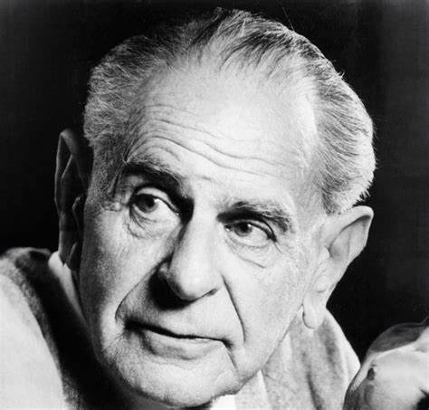
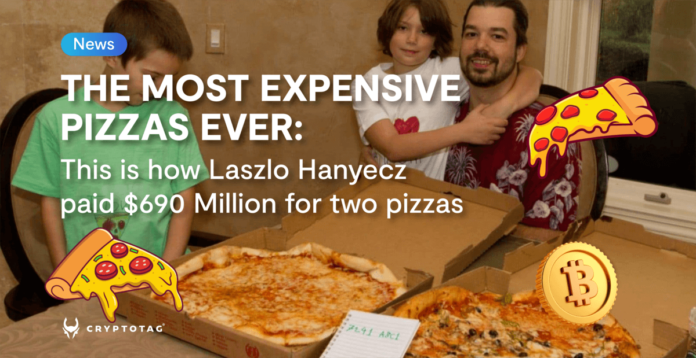
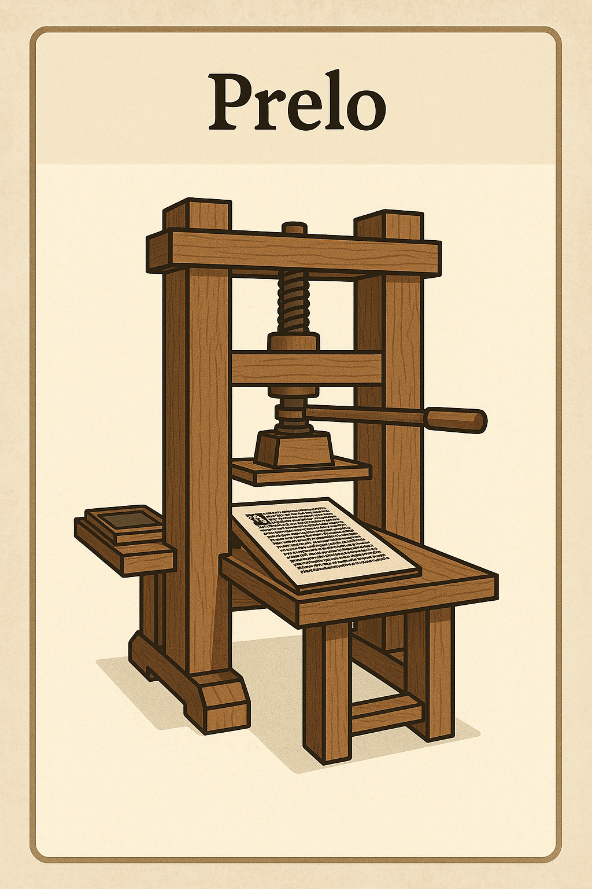
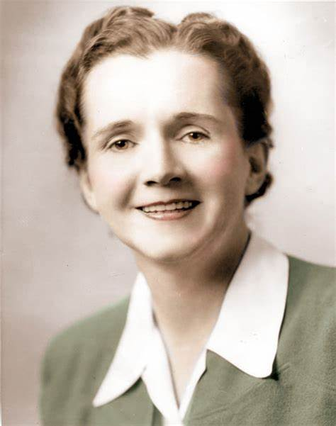
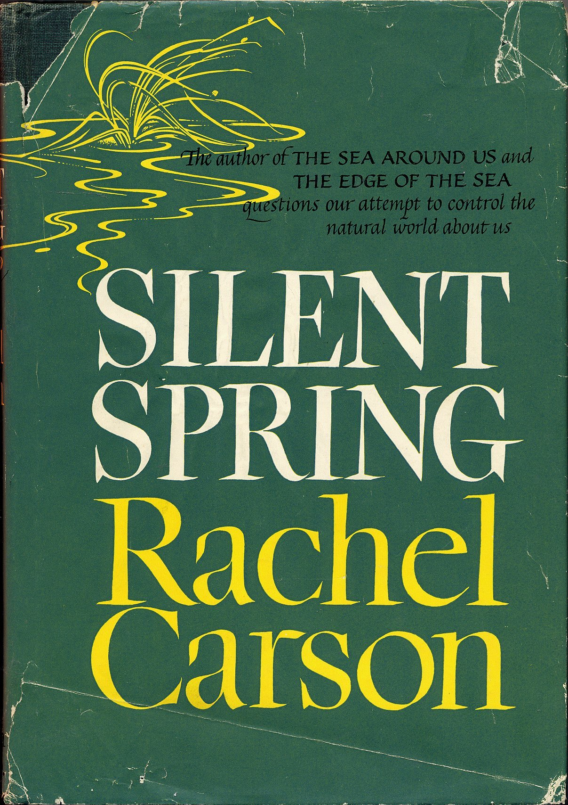
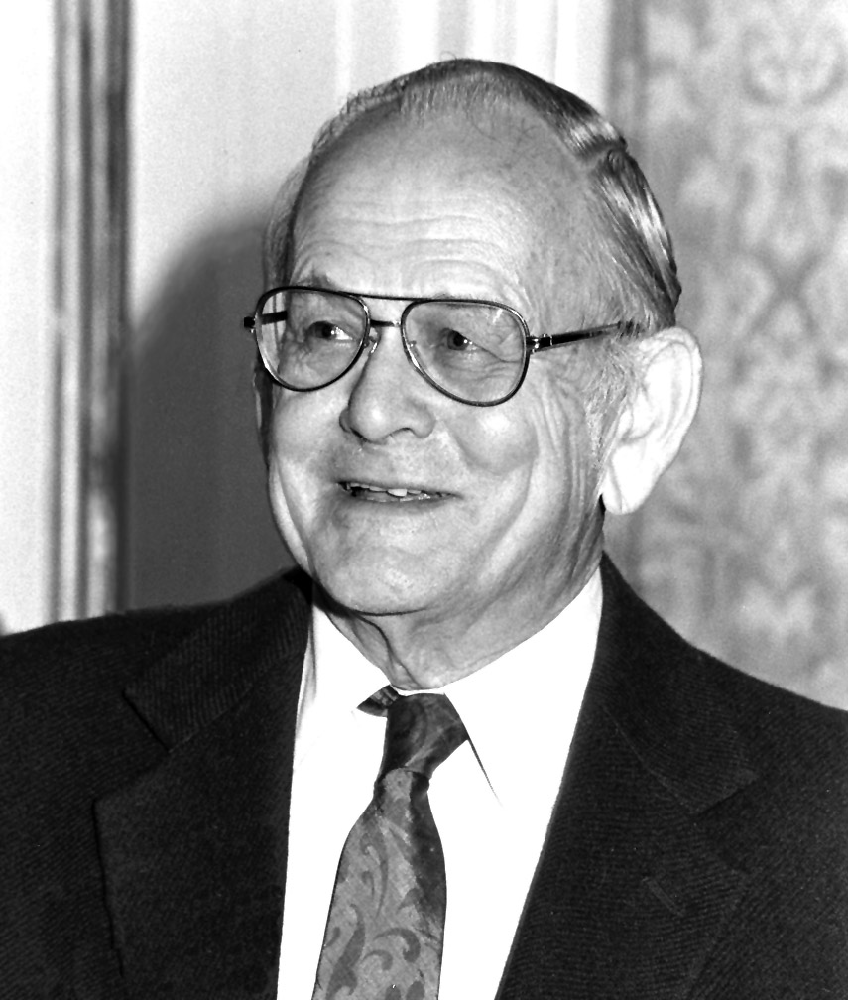
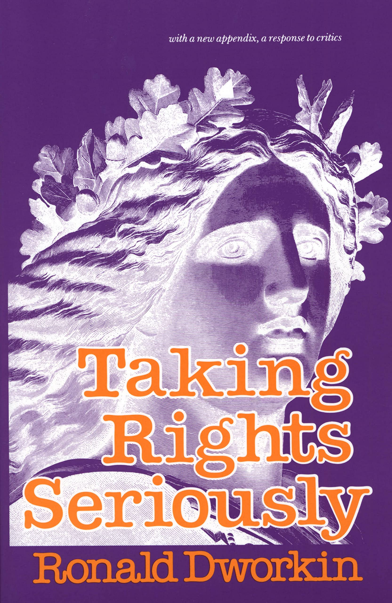
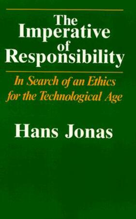
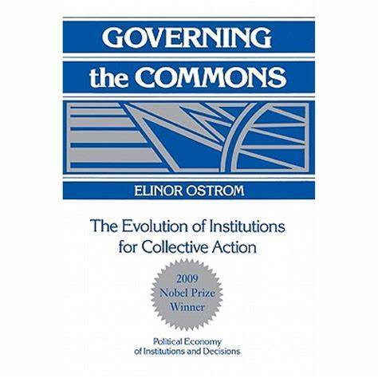

Contexto e Introdução
O que é o Estado Moderno?
Em que plano, dimensão, domínio ou esfera da realidade o Estado moderno existe?
Distinção tripartite da realidade
Karl Popper propôs uma distinção tripartite da realidade em sua teoria dos “três mundos”, apresentada inicialmente em sua obra Objective Knowledge: An Evolutionary Approach (1972). Nessa estrutura ontológica:
- o Mundo 1 corresponde ao mundo físico, dos objetos materiais e eventos naturais;
- o Mundo 2 refere-se ao mundo subjetivo da consciência, como pensamentos, emoções e experiências individuais;
- e o Mundo 3 diz respeito ao universo das ideias e das criaçãos, dos conteúdos objetivos do pensamento, como teorias científicas, argumentos, obras de arte e instituições sociais.
 Karl Popper (1902–1994), muito conhecimento pela sua concepção do método científico, apresentada, principalmente, em sua obra “A Lógica da Pesquisa Científica”, publicada originalmente em 1934 em alemão com o título “Logik der Forschung”. A tradução para o inglês, com revisões do próprio Popper, saiu em 1959.
Para Popper, embora o Mundo 3 tenha origem na mente humana, ele possui uma existência autônoma e pode exercer influência causal sobre os outros mundos, sobretudo o Mundo 2. Essa divisão teve grande impacto na filosofia da ciência e da mente, ao oferecer uma maneira de pensar sobre a realidade que inclui tanto aspectos físicos quanto sociais e simbólicos.
Yuval Noah Harari (1976–), em Sapiens: Uma Breve História da Humanidade, e mais recentemente, mas não apenas, em Nexus: Uma breve história das redes de informação, da Idade da Pedra à inteligência artificial, destaca uma distinção marcante entre três tipos de realidade: objetiva (fatos físicos), subjetiva (experiências individuais) e intersubjetiva (construções coletivas, como mitos, leis e instituições).
A ideia de realidade intersubjetiva não é um pioneirismo de Harari — embora ele a popularize de forma muito acessível e impactante em Sapiens. O conceito tem raízes profundas na filosofia, sociologia e fenomenologia, bem anteriores a Harari.
Edmund Husserl (1859–1938), fundador da fenomenologia, já tratava da intersubjetividade como condição para a constituição do mundo social: porque reconhecemos os outros como sujeitos, e porque vivemos em um horizonte compartilhado de sentido.
Alfred Schutz, influenciado por Husserl, desenvolveu o conceito de realidade intersubjetiva como mundo da vida compartilhado, base das interações sociais.
Peter Berger e Thomas Luckmann, em A Construção Social da Realidade (1966), consolidam a noção de realidade intersubjetiva como o universo onde significados são socialmente produzidos, transmitidos e mantidos.
- A realidade social é algo que não é dada, mas construída por meio da interação humana.
- Essa construção acontece em três etapas principais:
- Externalização: os seres humanos criam instituições e práticas sociais;
- Objetivação: essas criações ganham autonomia e passam a parecer naturais, como se sempre tivessem existido;
- Internalização: os indivíduos, ao nascerem em uma sociedade, absorvem essas estruturas como parte da realidade.
- Os humanos se destacam pela sua capacidade de construir a realidade social.
- Essa construção acontece em três etapas principais:
A originalidade da abordagem de Harari está em mostrar como a realidade intersubjetiva se tornou o principal campo de atuação das sociedades humanas, sustentando estruturas complexas exclusivamente por meio de crenças compartilhadas que se consolidam e operam em amplas redes de informações.
- Realidade objetiva
- Existe independentemente da consciência humana;
- Mesmo que ninguém acredite nelas, ainda existem;
- Exemplo 1: montanhas, átomos, gravidade;
- Exemplo 2: Uma pizza tem em média 1500 a 2500 calorias.
- Realidade subjetiva
- Existe apenas na mente individual;
- Só a pessoa que sente ou acredita acessa diretamente;
- Exemplo 1: dor, prazer, emoções, crenças pessoais;
- Exemplo 2: Quem prepara a pizza mais gostosa?
- Realidade intersubjetiva
- Existe entre mentes, sustentada coletivamente por um grupo de pessoas, ou em outras palavras, em redes de informações;
- Exemplo 1: Dinheiro, Leis, Religião
- Exemplo 2: Em 2010, Laszlo comprou duas pizzas por 10 mil Bitcoins (BTC). Esta foi a primeira transação comercial conhecida envolvendo BTC. Quanto vale um BTC?
Quanto vale uma pizza? 
Todos entendemos a existência dos EUA, da China, Rússia e Brasil como uma realidade objetiva, mas há casos, em que as pessoas divergem sobre a existência de certos Estados.
Dinheiro, Leis, Religião, Estado e Nação pertencem à realidade intersubjetiva; têm enorme poder dentro de uma rede informacional específica e não tem nenhum sentido fora dela.
Em Nexus, Harari destaca o livro e o prelo (imprensa tipográfica) como os primeiros instrumentos das tecnologias da informação, atuando como veículos fundamentais para a construção e disseminação de redes intersubjetivas de conhecimento e crença. Essas inovações provocaram revoluções nas formas de circulação da informação no cotidiano das pessoas e organizações.
Tabuleta, pergaminho, códice |

Prensa tipográfica |
O poder das estórias
Kendall Haven (1976-) 
Story Proof: The Science Behind the Startling Power of Story, 2007
- Primeiro autor a sistematizar a base científica do storytelling.
- Reuniu dezenas de estudos em neurociência, cognição e pedagogia para provar que a narrativa é o modo natural de pensamento humano.
“A mente humana se baseia em estórias e na arquitetura da estória como mapa primário para o entendimento, encontrando sentido, lembrando e planejando nossa vida. A vida é como as estórias por pensamos em termos de estórias.”
- Base científica sólida aplicada à narrativa:
- Antes de Story Proof, muitos autores já celebravam o poder da narrativa, mas Haven foi um dos primeiros a buscar provas empíricas e fundamentar cientificamente a importância das estórias. Ele argumenta que as estórias não são apenas uma forma de transmitir informações, mas um mecanismo central da cognição humana.
- Integração multidisciplinar:
- O livro destaca por conectar descobertas de diferentes campos — como o funcionamento da memória, os efeitos da emoção na aprendizagem, e o processamento da linguagem — para sustentar a tese de que a narrativa é essencial para o raciocínio, a comunicação e a tomada de decisão.
- Aplicações práticas:
- Haven não se limita à teoria. Ele mostra como aplicar o conhecimento sobre a estrutura da estória em ambientes educacionais, organizacionais e comunicacionais, antecipando discussões contemporâneas sobre storytelling em marketing, ciência, educação e política.
- Afirmação ousada e inovadora:
- A frase — “a mente humana se baseia em estórias […]” — resume de forma impactante o cerne do argumento de Haven, que rompe com visões mais tradicionais de que o pensamento humano seria puramente lógico ou analítico. Em vez disso, o autor afirma que pensamos literalmente em forma de estórias, o que redefine como entendemos aprendizado, persuasão e até identidade pessoal.
O termo “storytelling” como conceito estruturado e estudado começa a ganhar destaque a partir do século XX, embora o ato de contar estórias seja milenar. A seguir, uma breve linha do tempo com os principais marcos e autores que contribuíram para o nascimento e consolidação da ideia de storytelling como prática e objeto de estudo:
- Walter Benjamin – O Narrador (1936)
- Um dos primeiros intelectuais a refletir sobre o declínio da arte da narrativa oral na modernidade.
- Embora não use o termo “storytelling”, seu ensaio é fundamental para pensar a função social da narrativa.
- Joseph Campbell – O Herói de Mil Faces (1949)
- Introduz o conceito do monomito ou “jornada do herói”, mostrando que mitos e estórias seguem estruturas semelhantes ao redor do mundo.
- Campbell não fala em “storytelling” diretamente, mas influencia profundamente o cinema (ex: George Lucas com Star Wars (YouTube)) e mais tarde o campo de storytelling aplicado.
- Jerome Bruner – Psicologia e educação narrativa (décadas de 1980–1990)
- Um dos primeiros psicólogos a argumentar que o ser humano pensa e aprende por meio de narrativas.
- Bruner diferencia dois modos de pensamento: o paradigmático (lógico-científico) e o narrativo.
- Ele escreve que a narrativa é uma forma fundamental de organizar a experiência humana — uma ideia retomada diretamente por Kendall Haven.
- Barbara Hardy – Towards a Poetics of Fiction: 3) An Approach through Narrative (Hardy 1968)
- Narrative as a Primary Act of Mind
- Crítica literária britânica que afirmou que “pensamos em forma de estórias antes de pensarmos de qualquer outra forma”, antecipando ideias de Bruner e Haven.
Gênese do Pensamento em Justiça e Direito Ambiental
O antropocentrismo estabelece uma separação artificial entre o ser humano e a natureza, posicionando a humanidade em oposição às demais espécies do planeta e assumindo o ser humano como medida autorreferente de todas as coisas (Teixeira 2013).
Steve Cutts, 2012. Man
Rachel Carson (1933-2012)

Rachel Carson foi uma cientista, bióloga marinha, escritora e ecologista norte-americana. Por meio da publicação de Silent Spring (1962), além de diversos artigos e obras voltadas ao meio ambiente, desempenhou um papel fundamental no surgimento da consciência ambiental moderna.
Silent Spring, 1962

Alerta sobre os impactos negativos do uso de pesticidas, e o surgimento de movimentos ambientais
- Título simbólico:
- A “primavera silenciosa” é uma metáfora para um futuro em que os pássaros não cantam mais, porque foram envenenados pelos pesticidas — um alerta poético e trágico sobre o rumo que a humanidade está tomando.
- Uso de pesticidas:
- Carson mostra como substâncias químicas (como o DDT) são pulverizadas sem critério, afetando plantas, animais, solos, águas e seres humanos, acumulando-se na cadeia alimentar.
- Impactos na fauna:
- Pássaros, peixes e insetos polinizadores morrem ou sofrem mutações. Ela destaca especialmente os efeitos sobre as aves, cujas populações estão em declínio por conta da toxicidade dos pesticidas.
- Ciência vs. Indústria Química:
- Carson denuncia a omissão e manipulação das informações pelas grandes corporações químicas, que minimizam os riscos dos produtos e desconsideram a saúde pública e ambiental.
- Chamado à ação:
- Ela propõe uma ciência mais ética e responsável, o controle racional dos pragas com alternativas menos danosas e a necessidade de envolver o público nas decisões sobre o meio ambiente.
- Formação científica sólida
- Carson formou-se em biologia marinha pelo Chatham University (então chamado de Pennsylvania College for Women) e fez mestrado em zoologia na Johns Hopkins University, uma das principais universidades dos EUA.
- Começou escrevendo roteiros para o governo
- Ela trabalhou no U.S. Fish and Wildlife Service, escrevendo e editando textos científicos voltados ao público geral. Seus talentos como escritora foram reconhecidos desde cedo.
- Fama veio antes de Silent Spring
- Antes de Primavera Silenciosa, ela já era uma autora respeitada. Seu primeiro grande sucesso foi The Sea Around Us (1951), que ficou 86 semanas na lista de mais vendidos do New York Times. Ela também escreveu Under the Sea Wind e The Edge of the Sea.
- Silent Spring mudou a legislação
- Silent Spring teve um impacto direto na proibição do DDT nos EUA e inspirou a criação da Environmental Protection Agency (EPA) em 1970 EPA. A obra expôs como pesticidas bioacumulativos estavam contaminando a cadeia alimentar e afetando a saúde humana e da fauna.
- Foi alvo de ataques da indústria química
- Após o lançamento de seu livro, Carson sofreu intensa campanha difamatória por parte da indústria química, que tentou desacreditá-la tanto como cientista quanto como mulher. Apesar disso, sua reputação científica e a força das evidências prevaleceram.
- Corajosa até o fim
- Rachel Carson já estava lutando contra o câncer de mama durante a publicação de Silent Spring, mas escondeu sua doença do público para que sua mensagem não fosse diminuída. Faleceu em 1964, dois anos após a publicação do livro, aos 56 anos.
- Legado duradouro
- Rachel Carson é frequentemente considerada a mãe do movimento ambiental moderno. Seu trabalho é referência em ecologia, toxicologia ambiental, conservação e política pública.
- Influenciou gerações de cientistas e ativistas
- A influência de Carson se estende a figuras como Al Gore e Jane Goodall, além de inspirar leis de proteção ambiental em muitos países.
- Homenagens e memória
- O U.S. Fish and Wildlife Service nomeou um refúgio de vida selvagem em sua homenagem. Seu nome está em escolas, bolsas de estudo e até navios oceanográficos. Em 1980, recebeu postumamente a Medalha Presidencial da Liberdade, a maior honraria civil dos EUA.
Garrett Hardin (1915-2003)
A Tragédia dos Comuns, 1968

Garrett Hardin, biólogo ecologista e filósofo americano, é conhecido por seu trabalho sobre os limites do crescimento populacional, os recursos naturais e o conceito da tragédia dos comuns. Ele publicou vários textos que abordam essas questões, sendo seu mais famoso o artigo “The Tragedy of the Commons” (1968) (MichiganTechnologicalUniversity), onde discutiu como os recursos compartilhados, quando usados de forma não regulamentada, podem levar ao esgotamento devido à ação individual de interesse próprio.
O problema: No artigo, Garrett Hardin explica que, quando os recursos naturais são compartilhados por uma comunidade (como pastagens, florestas ou pescarias), cada indivíduo age de acordo com seu interesse próprio (egoísticos). Em um sistema sem regulamentação, isso leva ao uso excessivo desses recursos, o que, em última instância, causa a sua degradação.
Hardin usa o exemplo das pastagens comunitárias (os “comuns”), onde cada pastor tem um incentivo para aumentar o número de seus rebanhos. Mesmo que isso beneficie cada pastor individualmente no curto prazo, o impacto coletivo leva ao esgotamento da pastagem, prejudicando todos a longo prazo.
A tragédia ocorre porque, enquanto o benefício de adicionar mais um animal ao rebanho é privatizado (o pastor ganha diretamente), os custos de sobrecarga no recurso são compartilhados por toda a comunidade (a degradação da pastagem é um problema coletivo). Isso cria um dilema no qual ninguém pode agir de forma a evitar a degradação sem a colaboração de outros.
A solução: Hardin defende que a solução para a tragédia dos comuns não está na liberdade absoluta de acesso aos recursos, mas na regulação e no controle para garantir o uso sustentável. Ele argumenta que a intervenção externa, através de leis ou instituições governamentais, é necessária para evitar o colapso ambiental.
Hardin também introduz o conceito de “liberdade para agir” versus “liberdade para poluir” com sua afirmação “freedom in a commons brings ruin to all”, afirmando que a verdadeira liberdade não deve resultar em prejuízos para os outros ou para o meio ambiente.
Conferência de Estocolmo ou Conferência das Nações Unidas sobre o Meio Ambiente Humano (Suécia, 1972)
A Conferência de Estocolmo foi o primeiro evento internacional de grande escala que colocou a questão ambiental no centro da agenda política mundial. Realizada em Estocolmo, Suécia, de 5 a 16 de junho de 1972, a conferência teve como principal objetivo promover a consciência global sobre os problemas ambientais e estabelecer uma plataforma para discutir como os países poderiam enfrentar essas questões em nível global.
- Objetivos da Conferência:
- Fomentar a cooperação internacional sobre questões ambientais.
- Discutir o impacto do desenvolvimento industrial e urbano sobre o meio ambiente.
- Elaborar uma agenda internacional para o futuro das políticas ambientais.
- Abordar a interdependência entre a proteção ambiental e o desenvolvimento econômico.
- Resultados:
- Criação do Programa das Nações Unidas para o Meio Ambiente (PNUMA), com o objetivo de coordenar ações globais de preservação ambiental.
- Estabelecimento de políticas públicas mais orientadas para o meio ambiente, que surgiriam ao longo das décadas seguintes.
- Reconhecimento da conexão entre desenvolvimento econômico e proteção ambiental.
A Declaração de Estocolmo foi um dos resultados mais importantes da conferência. Ela consistiu em 26 princípios, que delineavam as responsabilidades dos países e da comunidade internacional na preservação do meio ambiente e no desenvolvimento sustentável.
A Conferência de Estocolmo e a Declaração de Estocolmo marcaram um ponto de inflexão na história das relações internacionais e da política ambiental. Elas fizeram com que as questões ambientais passassem a ser tratadas de forma mais séria no cenário global e ajudaram a moldar os princípios de sustentabilidade que continuamos a discutir e a aplicar até hoje.
John Rawls (1921-2002)
Rawls é uma das figuras mais importantes ao discutir a justiça social dentro do direito. Em sua obra “Uma Teoria da Justiça”, ele desenvolve o conceito de justiça distributiva, onde as desigualdades sociais e econômicas só podem ser justificadas se beneficiam os mais desvantajosos (o princípio da diferença).
O Conceito de Véu da Ignorância
Rawls propõe que, para determinar as regras de uma sociedade justa, deveríamos imaginar um cenário em que as pessoas não soubessem suas características individuais ou sociais antes de fazer escolhas sobre o sistema de justiça. Este exercício é chamado de “o véu da ignorância”.
A ideia básica é que, se as pessoas não soubessem qual posição ocupam na sociedade (se seriam ricos ou pobres, homens ou mulheres, brancos ou negros, etc.), elas escolheriam princípios de justiça que seriam imparciais e justos para todos. Isso porque, ao estarem sem qualquer preconceito ou conhecimento sobre sua própria posição, as pessoas seriam forçadas a escolher regras que protejam os interesses dos mais vulneráveis, uma vez que poderiam, hipoteticamente, ser qualquer pessoa na sociedade.
- Como o Véu da Ignorância Funciona
- Rawls sugere que, para criar uma sociedade justa, as pessoas em um estado original (que não sabem sua posição futura) escolheriam duas coisas principais:
- Liberdade básica e direitos fundamentais para todos:
- Cada pessoa teria o direito a um conjunto de liberdades e direitos iguais, como a liberdade de expressão, a liberdade de associação, a liberdade de pensamento, etc.
- Princípio da diferença:
- As desigualdades sociais e econômicas podem ser permitidas, mas apenas se beneficiarem os mais desvantajosos na sociedade. Em outras palavras, a desigualdade só é justificável se ela melhorar a posição dos menos favorecidos, como na educação, saúde, e oportunidades econômicas.
- Liberdade básica e direitos fundamentais para todos:
- Assim, o véu da ignorância serve como uma ferramenta para garantir que as escolhas sejam feitas de forma imparcial e sem preconceitos, promovendo justiça e equidade.
- Rawls sugere que, para criar uma sociedade justa, as pessoas em um estado original (que não sabem sua posição futura) escolheriam duas coisas principais:
Ronald Dworkin (1931-2013)
A teoria do direito de Dworkin sustenta que argumentos jurídicos adequados repousam na melhor interpretação moral possível das práticas em vigor em uma determinada comunidade. A essa teoria de argumentação jurídica agrega-se uma teoria de justiça, segundo a qual todos os juízos a respeito de direitos e políticas públicas devem basear-se na idéia de que todos os membros de uma comunidade são iguais enquanto seres humanos, independentemente das suas condições sociais e econômicas, ou de suas crenças e estilos de vida, e devem ser tratados, em todos os aspectos relevantes para seu desenvolvimento humano, com igual consideração e respeito.
O Juiz Hércules
O Juiz Hércules é uma figura hipotética. Ele é um modelo idealizado de juiz, dotado de inteligência sobre-humana, conhecimento jurídico profundo e capacidade analítica extraordinária.
O objetivo de Dworkin ao imaginar esse juiz não era propor que tal pessoa existisse, mas sim explorar como o Direito deveria ser interpretado de maneira ideal.
- Características do Juiz Hércules:
- Conhecimento extensivo: Ele conhece todo o ordenamento jurídico, a história das decisões judiciais, os princípios e valores morais da comunidade.
- Consistência e coerência: Busca interpretar o direito de modo que todas as decisões formem um sistema coerente, como se fossem capítulos de um mesmo livro.
- Interpretação principialista: Vai além das regras escritas. Aplica princípios jurídicos (como igualdade, liberdade, justiça) para decidir os casos mais difíceis.
- Justiça substantiva: Seu julgamento leva em consideração os direitos das pessoas, mesmo nos casos em que as regras são vagas ou omissas.
- O papel do Juiz Hércules:
- Dworkin utiliza Hércules para criticar o positivismo jurídico, especialmente a visão de H.L.A. Hart, que separava claramente direito e moral. Para Dworkin, os princípios morais fazem parte do direito e o juiz deve interpretá-los.
- O juiz Hércules mostra que não basta aplicar a lei mecanicamente — é preciso interpretá-la com base em princípios de justiça, equidade e integridade. Ele decide casos difíceis buscando a melhor resposta possível dentro do sistema jurídico, mesmo quando não há uma regra clara aplicável.
Levando os Direitos a Sério, 1977


- Exemplo prático:
- Imagine um caso em que uma lei não prevê claramente se um grupo minoritário tem direito a determinado benefício. O Juiz Hércules analisaria:
- A letra da lei
- As decisões anteriores
- Os princípios constitucionais
- Os valores morais da sociedade
- E tomaria uma decisão que respeite os direitos das pessoas, mesmo que não esteja expressamente prevista na legislação.
- Imagine um caso em que uma lei não prevê claramente se um grupo minoritário tem direito a determinado benefício. O Juiz Hércules analisaria:
- Em resumo
- O Juiz Hércules representa o ideal de um julgador que interpreta o direito com profundidade moral, sensibilidade aos princípios e compromisso com a coerência jurídica.
- Ele nos inspira a pensar o direito não como um conjunto de regras frias, mas como um campo interpretativo permeado por valores, princípios e direitos fundamentais.
Hans Jonas (1903-1993) 
Hans Jonas foi um filósofo alemão que se destacou por sua reflexão sobre ética, tecnologia e responsabilidade. Em sua obra mais conhecida, O Princípio Responsabilidade (1979), Jonas propõe uma ética para a civilização tecnológica, sustentada na ideia de que as ações humanas devem ser guiadas não apenas pelas consequências imediatas, mas, sobretudo, por seu impacto sobre as futuras gerações e a integridade do planeta.
O pensamento de Hans Jonas oferece uma base filosófica robusta para o desenvolvimento sustentável, ao colocar a responsabilidade intergeracional no centro da ação ética, política e econômica. Seu legado nos lembra que, em um mundo em transformação acelerada, o dever de proteger a vida e os ecossistemas deve orientar todas as escolhas humanas.
Hans Jonas tem sido amplamente estudado por juristas, especialmente no contexto do direito ambiental, onde sua ética da responsabilidade oferece fundamentos para princípios jurídicos como o da precaução. No Brasil, sua influência é notável na legislação ambiental, sendo frequentemente citada em debates sobre justiça intergeracional e responsabilidade socioambiental (Teixeira 2013; Waldman, Munhoz, e Sampaio 2017).
The Imperative of Responsibility: In Search of an Ethics for the Technological Age, publicada em alemão em 1979; inglês em 1984.

Elinor Ostrom (1933-2012)
Em seu livro Governing the Commons (1990), Ostrom argumenta que a visão de Hardin sobre a inevitabilidade da degradação dos recursos comuns devido ao comportamento egoísta dos indivíduos é simplista e não reflete a realidade observada em diversas comunidades ao redor do mundo.
Ela apresenta estudos de caso que mostram como grupos locais podem desenvolver regras e instituições para gerenciar recursos de maneira sustentável.
Ostrom também critica a dicotomia proposta por Hardin entre soluções estatais e privatização, sugerindo que há uma terceira via: a autogestão comunitária. Ela enfatiza que as comunidades podem criar sistemas de governança que equilibram os interesses individuais e coletivos, promovendo a cooperação e evitando a tragédia dos comuns (Philonomist).
Governing the Commons: The Evolution of Institutions for Collective Action, 1990; Nobel em 2009.

O trabalho de Ostrom foi reconhecido pelo Comitê Nobel em 2009, que destacou sua análise da governança econômica, especialmente dos bens comuns. Ela foi a primeira mulher a receber o Prêmio Nobel de Ciências Econômicas, refletindo a importância e o impacto de suas contribuições para a compreensão da gestão de recursos compartilhados (Investopedia).
Revisão de Hardin
Posteriormente, Garrett Hardin reconheceu limitações em sua teoria original. Ele admitiu que o que descreveu como “tragédia dos comuns” na verdade se referia à “tragédia dos comuns não geridos”, reconhecendo que a gestão inadequada, e não a natureza humana, é a verdadeira causa da degradação dos recursos comuns (GarrettHardinSociety).
Questões: